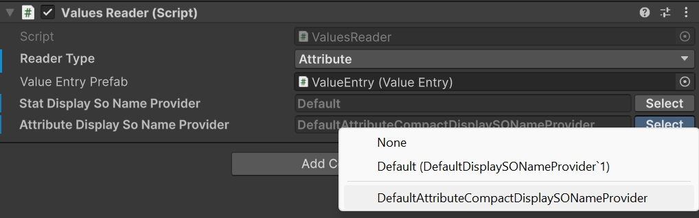
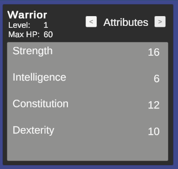
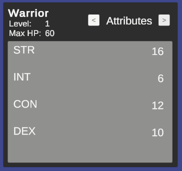

Advanced topics
Presentation layer and localization
🏷️ Version 1.2.0+
The framework focuses on the business logic of RPG systems and does not impose any specific presentation layer or localization strategy. You are free to implement your own UI and localization solutions that best fit your project's needs. However, the framework provides basic support for the presentation layer by allowing you to define display names for attributes, statistics, and classes. These display names can be used in your UI to present information to players in a user-friendly manner. In fact, ScriptableObjects names are convenient and quick to use during development, but they are not ideal for presentation to players. By defining display names, you can separate the internal representation of your RPG systems from the user-facing presentation layer.
IDisplaySONameProvider
The framework includes the IDisplaySONameProvider interface, which can be implemented by UI components to display readable names for attributes, statistics, and classes:
public interface IDisplaySONameProvider
{
string GetDisplayName(ScriptableObject asset);
}
The framework provides a default implementation of this interface, DefaultDisplaySONameProvider, which retrieves the ScriptableObject's name and returns it as the display name. You can use this default implementation or create your own custom implementation to suit your localization needs.
The attributes are a particular as in many RPGs they can either be presented with the extended name (e.g., "Strength") or with an abbreviation (e.g., "STR"). To accommodate this, the framework provides the DefaultAttributeCompactDisplaySONameProvider implementation, which returns the first three letters, capitalized, as the display name for a certain attribute.
Using custom display name providers
To use a custom display name provider, you can instantiate your implementation in your own scripts, or rely on the TypeSelectable attribute provided by the framework to select the implementation from the Unity inspector. For example:
[SerializeReference, TypeSelectable(typeof(DefaultDisplaySONameProvider))]
private IDisplaySONameProvider _attributeDisplayNameProvider;
TypeSelectable is an experimental feature of the framework that allows you to select a concrete implementation of an interface from the Unity inspector.
The parameter passed to TypeSelectable is the default implementation that will be selected when the inspector is first displayed. You can then choose a different implementation from a dropdown list in the inspector.
Note
Starting with v2.0.0, the editor emits a startup warning (TypeSelectableClosedGenericValidator) when a [SerializeReference, TypeSelectable] field targets a closed generic type. This is a guardrail against Unity bug UUM-44729, where renaming any type inside a generic argument silently drops the serialized value. If you see this warning, refactor the field type to the non-generic IDisplaySONameProvider.
If you take a look at the demo scene, if you select the AttributesContainer GameObject inside WarriorCanvas -> HeroPanel in the hierarchy, you will see a Attribute Display So Name Provider field in the inspector under the Values Reader component. This field uses the TypeSelectable attribute to allow you to choose between the default and compact display name providers for attributes.

The implementation passed as parameter to TypeSelectable will be instantiated automatically by the framework during script compilation. Moreover, the framework will show it in the inspector, in the dropdown list, as the Default option under None.
During Play Mode, you can switch between the different implementations to see how the display names change in the UI of the sample scene.
With the default implementation, the attributes will be displayed with their full names:

With the compact implementation, the attributes will be displayed with their abbreviations:

Reader APIs and safe value access
🏷️ Version 2.0.0+
When you only need to read values, prefer the dedicated reader interfaces over reaching into concrete components. IAttributeReader and IStatReader expose safe TryGet / TryGetBase APIs that let you query both final and pre-modifier values without assuming the requested asset is present.
IAttributeReader attributeReader = entityCore;
IStatReader statReader = entityCore;
if (attributeReader.TryGet(strengthAttribute, out long strength) &&
statReader.TryGet(physicalAttackStat, out long physicalAttack))
{
Debug.Log($"STR {strength}, PATK {physicalAttack}");
}
EntityCore implements both reader interfaces, which makes it a convenient read facade for gameplay systems that already work with the entity as their entry point.
If you also need the unmodified values, use TryGetBase:
if (statReader.TryGetBase(physicalAttackStat, out long basePhysicalAttack))
{
Debug.Log($"Base Physical Attack: {basePhysicalAttack}");
}
Get and GetBase can still be convenient on concrete containers when you already know the asset exists, but TryGet and TryGetBase are the safer default for reusable code paths. This is especially relevant in v2.0.0 because StatSetInstance is no longer an IStatReader; code that needs a generic stat reader should depend on EntityCore, EntityStats, or another explicit IStatReader provider instead.
Rounding double-based calculations
🏷️ Version 2.0.0+
The framework now exposes RoundingMode to make integer conversion intent explicit when a calculation produces a double. The built-in modes are:
Round: rounds to the nearest integer, with midpoint values rounding away from zeroFloor: rounds downCeil: rounds up
double scaledValue = 214.5;
int rounded = RoundingMode.Round.ApplyToInt(scaledValue); // 215
int floored = RoundingMode.Floor.ApplyToInt(scaledValue); // 214
Use RoundingMode when authoring custom calculators or other extension points that need deterministic integer conversion semantics instead of ad-hoc casts.
Owner-aware GameAction execution
🏷️ Version 2.0.0+
GameActionBase is the non-generic root used by inspector-facing authoring surfaces that need to reference actions with different concrete context types. Concrete assets still execute through GameAction<TContext>, which now also supports owner-aware execution through ExecuteWithOwnerAsync.
This matters most for event-driven workflows. GameEventListeners can dispatch owner-aware actions using the listener component as runtime owner, and wrapper actions such as Composite, Delayed, Conditional, and projection actions preserve that owner while forwarding execution. This allows conditions that depend on Holder resolution to behave consistently across nested action chains.
For the practical inspector workflow, see Workflows. For the condition-side resolution model, see Conditions.
Payload-aware condition fields in custom editors
🏷️ Version 2.0.0+
ConditionFieldWithQuickSetup is the intended public entry point when a custom inspector pairs a [SerializeReference] IReactiveTrigger field with a [SerializeReference] Condition field.
With filterByTriggerPayload: true, the helper reads IReactiveTrigger.PayloadType, builds a ConditionEvaluationAvailability, and reuses the same compatibility rules as the built-in inspectors. In practice, this means:
- condition type pickers only show conditions whose
ConditionPayloadAttributemetadata is compatible with the current payload ConditionTargetdropdowns only show entity slots that are actually available in the current evaluation context- already-authored incompatible trees stay visible and emit inline errors instead of failing silently
Note
For the metadata contract expected from custom Condition and IReactiveTrigger types, see Extending the system with custom conditions and triggers.
This is the standard inspector-side wiring:
using ElectricDrill.AstraRpgFramework.Editor.Conditions;
using UnityEditor;
using UnityEngine;
[CustomEditor(typeof(MyReactiveComponent))]
public sealed class MyReactiveComponentEditor : UnityEditor.Editor
{
public override void OnInspectorGUI()
{
serializedObject.Update();
var triggerProperty = serializedObject.FindProperty("_trigger");
var conditionProperty = serializedObject.FindProperty("_condition");
EditorGUILayout.PropertyField(triggerProperty, true);
ConditionFieldWithQuickSetup.DrawLayout(
conditionProperty,
new GUIContent("Condition"),
triggerProperty,
filterByTriggerPayload: true);
serializedObject.ApplyModifiedProperties();
}
}
If the configured trigger is parameterless (PayloadType == typeof(void)), the picker keeps only payload-agnostic conditions, and ConditionTarget is reduced to the always-available slots (Holder and Performer).
If you are inside a PropertyDrawer or any rect-based workflow, use the explicit height + draw pair:
public override float GetPropertyHeight(SerializedProperty property, GUIContent label)
{
var triggerProperty = property.FindPropertyRelative("_trigger");
var conditionProperty = property.FindPropertyRelative("_condition");
return EditorGUI.GetPropertyHeight(triggerProperty, true)
+ EditorGUIUtility.standardVerticalSpacing
+ ConditionFieldWithQuickSetup.GetHeight(
conditionProperty,
triggerProperty: triggerProperty,
filterByTriggerPayload: true);
}
public override void OnGUI(Rect position, SerializedProperty property, GUIContent label)
{
var triggerProperty = property.FindPropertyRelative("_trigger");
var conditionProperty = property.FindPropertyRelative("_condition");
float y = position.y;
float triggerHeight = EditorGUI.GetPropertyHeight(triggerProperty, true);
var triggerRect = new Rect(position.x, y, position.width, triggerHeight);
EditorGUI.PropertyField(triggerRect, triggerProperty, true);
y += triggerHeight + EditorGUIUtility.standardVerticalSpacing;
ConditionFieldWithQuickSetup.Draw(
ref y,
position.x,
position.width,
conditionProperty,
new GUIContent("Condition"),
triggerProperty,
filterByTriggerPayload: true);
}
If your editor already knows the evaluation context and does not expose a trigger field, pass the availability explicitly instead of deriving it from IReactiveTrigger:
using ElectricDrill.AstraRpgFramework.Conditions;
using ElectricDrill.AstraRpgFramework.Editor.Conditions;
using UnityEngine;
ConditionFieldWithQuickSetup.DrawLayout(
conditionProperty,
new GUIContent("Condition"),
actionGroups: ConditionQuickActionUtility.ActionGroups.None,
availability: ConditionEvaluationAvailability.WithoutPayload());
Operational notes:
triggerPropertymust point to a managed-reference value implementingIReactiveTrigger. If it isnullor unconfigured, the helper falls back to the normal unfiltered condition picker unless you passavailability:explicitly.ConditionEvaluationAvailability.ForPayload(...)unlocks payload-derivedConditionTargetoptions from the payload contract itself:IHasEntity(or a payloadComponent) enablesPayloadEntity,IHasTargetenablesPayloadTarget,IHasPerformerenablesPayloadPerformer, andIHasVictimenablesPayloadVictim.- Use
ConditionEvaluationAvailability.WithoutPayload()for timer/tick style contexts with no event payload. UseConditionEvaluationAvailability.ForPayload(typeof(TPayload))when the payload type is fixed but not exposed through a serialized trigger field. - Filtering works on nested composite conditions too. Child condition pickers and child
ConditionTargetfields inherit the same availability automatically. - Existing incompatible condition trees are not hidden silently: the field shows an inline warning so the author can fix the tree.
- If you want the condition UI without the quick-setup button, pass
actionGroups: ConditionQuickActionUtility.ActionGroups.Nonewhile keeping eitherfilterByTriggerPayload: trueor an explicitavailability:.
This keeps custom editor code thin while still giving authors immediate feedback when a condition depends on a payload contract or target slot that the current context cannot provide.